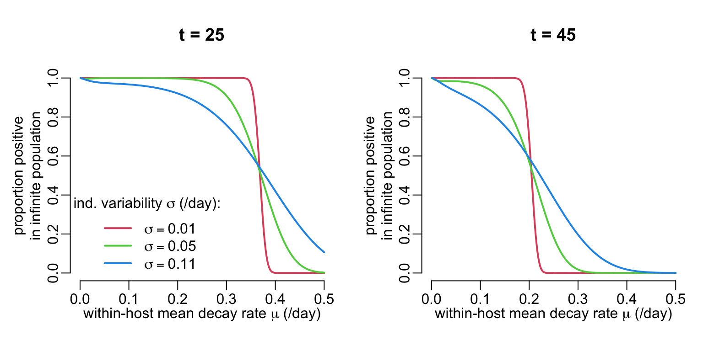
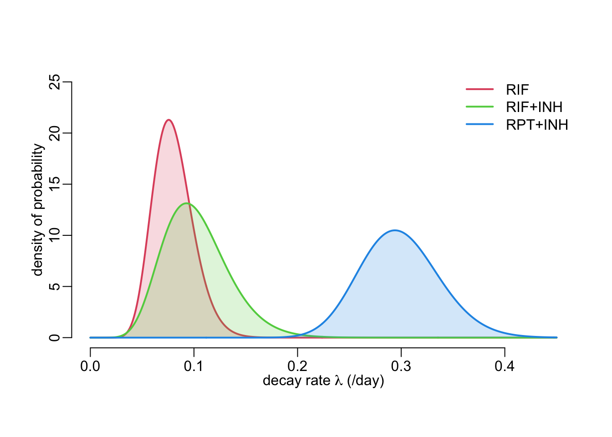
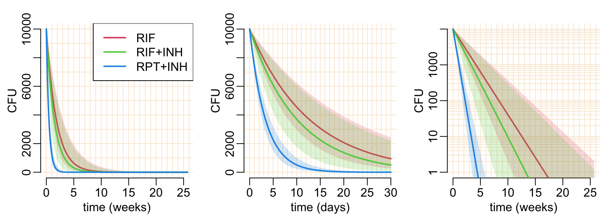
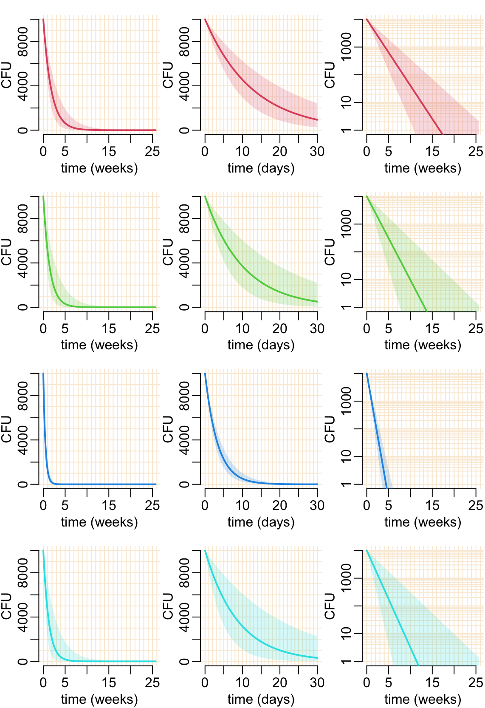

library(readxl)
library(dplyr)
library(purrr)
library(tidyr)
library(bbmle)Of mice and men
All the data and source code files are here.
1 Introduction
Here we are working on the data from Zhang et al. “Short-course chemotherapy with TMC207 and rifapentine in a murine model of latent tuberculosis infection”. American Journal of Respiratory and Critical Care Medicine 184.6 (2011): 732-737. DOI: 10.1164/rccm.201103-0397OC
The data show the proportion of positive mice as a function of time (about 15 mice per time point and treatment) but what we are interested in is the CFU clearance dynamics at the individual level. Since the former is a consequence of the latter, we develop a simple model of CFU clearance at the individual level from which we compute the consequences at (small-size) population level. By confronting the model-predicted consequences at population level with actual experimental data, we are able to estimate the two parameters of the model. Once the model is calibrated, we can use it to explore what would be the effect of decreasing the initial value of CFU on the time at which the individual clear the infection.
The model itself is a simple exponential decay model with inter-individual variability on the rate of decay that is modelled by a Gamma distribution.
2 Packages
Loading the packages needed for the analysis:
3 Utilitary functions
Width of the lines:
line_width <- 2Colors of the treatments:
col_treatments <- 1:4A function that adds proportions estimates and confidence intervals to a data frame from a column of successes and a column or trials:
add_prop_est <- function(df, x, n, p = "est", l = "lwr", u = "upr", ...) {
df |>
mutate(test = map2({{ x }}, {{ n }}, prop.test, ...),
"{p}" := map_dbl(test, ~ .x[["estimate"]]),
conf = map(test, ~ setNames(.x[["conf.int"]], c(l, u)))) |>
unnest_wider(conf) |>
select(- test)
}A reparameterization of dgamma():
dgamma2 <- function(x, mu, sigma) {
dgamma(x, mu^2 / sigma^2, scale = sigma^2 / mu)
}A reparameterization of qgamma():
qgamma2 <- function(p, mu, sigma) {
qgamma(p, mu^2 / sigma^2, scale = sigma^2 / mu)
}A function that adds legend:
add_legend <- function(where = "topright", ...) {
legend(where, legend = c("RIF", "RIF+INH", "RPT+INH"),
col = col_treatments[-1], lwd = line_width, ...)
} Tuning legend():
legend2 <- function(...) legend(..., bty = "n")Tuning abline():
abline2 <- function(...) abline(..., col = "antiquewhite")Tuning point():
points2 <- function(...) points(..., lwd = line_width)Tuning arrows():
arrows2 <- function(...) {
arrows(..., length = 0.1, angle = 90, code = 3, lwd = line_width)
}Tuning lines():
lines2 <- function(...) lines(..., lwd = line_width)Tuning polygon():
polygon2 <- function(x, y1, y2, col, ...) {
polygon(c(x, rev(x)), c(y1, rev(y2)), border = NA, col = adjustcolor(col, .2), ...)
}Tuning seq():
seq2 <- function(...) seq(..., le = 100)
seq3 <- function(...) seq(..., le = 512)Tuning list():
list2 <- function(...) {
setNames(c(as.list(environment()), list(...)),
map_chr(as.list(match.call())[-1], as.character))
}4 The data
Reading the data:
table2 <- read_excel("table 2 Zhang et al 2011.xlsx")The data look like this:
table2# A tibble: 9 × 4
group duration positive total
<chr> <dbl> <dbl> <dbl>
1 INH 4 15 15
2 INH 6 15 15
3 RIF 2 15 15
4 RIF 3 13 15
5 RIF 4 6 13
6 RIF+INH 2 14 15
7 RIF+INH 3 7 13
8 RPT+INH 1 9 15
9 RPT+INH 2 0 15And the treatments are as so:
(treatments <- unique(table2$group))[1] "INH" "RIF" "RIF+INH" "RPT+INH"Preparing the data for vizualization by:
- computing the proportions of positive mice with 95% confidence intervals
- jittering the duration variable slightly in order to avoid visual overlap
table2a <- table2 |>
add_prop_est(positive, total) |>
mutate_at("duration", jitter, factor = .2)It looks like this:
table2a# A tibble: 9 × 7
group duration positive total est lwr upr
<chr> <dbl> <dbl> <dbl> <dbl> <dbl> <dbl>
1 INH 4.02 15 15 1 0.747 1
2 INH 6.02 15 15 1 0.747 1
3 RIF 1.99 15 15 1 0.747 1
4 RIF 3.00 13 15 0.867 0.584 0.977
5 RIF 4.00 6 13 0.462 0.204 0.739
6 RIF+INH 2.00 14 15 0.933 0.660 0.997
7 RIF+INH 2.96 7 13 0.538 0.261 0.796
8 RPT+INH 1.01 9 15 0.6 0.329 0.825
9 RPT+INH 2.00 0 15 0 0 0.253A function that plots proportion estimates and confidence intervals for a given treatment x:
plot_prop_est <- function(x, col, polyg = TRUE, connect = TRUE) {
with(x, {
if (polyg) polygon2(duration, lwr, upr, col)
points2(duration, est, col = col, type = ifelse(connect, "o", "p"))
arrows2(duration, lwr, duration, upr, col = col)
if (connect) {
lines2(duration, lwr, lty = 2, col = col)
lines2(duration, upr, lty = 2, col = col)
}
})
}A function that plots the proportions estimates from the data:
plot_data_prop_est <- function(polyg = TRUE, connect = TRUE) {
plot(NA, xlim = c(0, 6), ylim = 0:1,
xlab = "duration of treatment (months)",
ylab = "proportion of positive mice")
table2a |>
group_by(group) |>
group_split() |>
walk2(col_treatments, plot_prop_est, polyg, connect)
}The plot showing points estimates with confidence intervals from the data:
plot_data_prop_est()
legend2("bottomright", legend = treatments, col = col_treatments, lwd = line_width)5 A model of CFU decay
5.1 Exponential decay
Let’s assume that the CFU in an individual decays at a constant rate \(\lambda\). Then, the CFU as a function of time \(t\) reads:
\[ \mbox{CFU}(t) = \mbox{CFU}_0 e^{-\lambda t} \]
A function that gives CFU as a function of initial CFU\(_0\), decay rate and time:
cfu <- function(cfu0, lambda, t) {
cfu0 * exp(- lambda * t)
}Let’s try it:
cfu(1e4, .115, 30)[1] 317.45645.2 Individual variability
The next step is to consider that the rate of exponential decay varies slightly from individual to individual. Let’s consider that this inter-individual variability follows a Gamma distribution:
\[ \lambda \sim \mbox{Gamma}(\mu,\sigma) \] where \(\mu\) and \(\sigma\) are the mean and standard deviation of the Gamma distribution. Next, we want to work out how these \(\mu\) and \(\sigma\) parameters translate into a proportion of positive individuals in a population of an infinite number of individuals at time \(t\) (positivity being defined as CFU \(\ge 1\)). This is done by looking at the cumulative probability of the Gamma distribution of the decay rate that leads to the quantile of the inter-individual CFU distribution that is the closest to 1. To do so, we need a function that expresses the distance of the quantile of the inter-individual CFU distribution to 1:
dist_to_1 <- function(p, mu, sigma, N0, t) {
abs(1 - cfu(N0, qgamma2(p, mu, sigma), t))
}We then use this function in the following function that converts values for \(\mu\) and \(\sigma\) of the Gamma distribution of the inter-individual variability of exponential decay rate into the probability parameter of a binomial distribution that corresponds to the expected proportion of positive individuals in the population:
probability <- function(mu, sigma, N0 = 1e4, t, epsilon = 1e-16) {
upr <- cfu(N0, qgamma2(epsilon, mu, sigma), t)
if (upr < 1) {
return(0)
} else {
lwr <- cfu(N0, qgamma2(1 - epsilon, mu, sigma), t)
if (lwr > 1) {
return(1)
}
else {
optimize(dist_to_1, 0:1, mu = mu, sigma = sigma, N0 = N0, t = t)$minimum
}
}
}Let’s try it with this function:
plot_cfu <- function(mu_val, sigma_val, t_val, col_val, leg) {
plot(NA, xlim = c(0, .5), ylim = 0:1,
xlab = expression(paste("within-host mean decay rate ", mu, " (/day)")),
ylab = "in infinite population",
main = paste("t =", t_val))
mtext("proportion positive", 2, 2.5)
walk2(sigma_val, col_val,
~ lines2(mu_val,
map_dbl(mu_val, probability, sigma = .x, t = t_val),
col = .y))
if (leg) {
legend2("bottomleft", col = col_val, lwd = line_width,
legend = sapply(sigma_val,
function(x)
as.expression(substitute(sigma == A,
list(A = as.name(x))))),
title = expression(paste("ind. variability ", sigma, " (/day):")))
}
}Let’s look at 2 time points:
opar <- par(mfrow = 1:2, cex = 1, plt = c(.2, .95, .2, .8))
walk2(c(25, 45),
c(TRUE, FALSE),
~ plot_cfu(mu_val = seq3(.001, .5), # (/day)
sigma_val = c(.01, .05, .11), # (/day)
t_val = .x, # (day)
col_val = col_treatments[-1],
leg = .y))
par(opar)6 ML estimation
6.1 Likelihood function
The first step consists in expressing a function that computes minus log likelihood:
threshold <- - log(1e-16)
mLL <- function(mu, sigma, N0, data, epsilon = 1e-16) {
min(threshold,
- sum(dbinom(data$positive,
data$total,
map_dbl(data$duration,
~ probability(mu, sigma, N0, .x * 30, epsilon)),
TRUE)))
}Let’s try it:
mLL(mu = .3, sigma = .01, N0 = 1e4, data = filter(table2, group == "RIF"))[1] 36.841366.2 Likelihood surfaces
Since we have only 2 parameters, we can easily have a look at the likelihood surface. A function that calculates the minus log-likelihood values:
calc_mLL <- function(drug, mu_val, sigma_val, N0 = 1e4, epsilon = 1e-16) {
mLL_val <- expand.grid(mu_val, sigma_val) |>
with(map2_dbl(Var1, Var2, mLL, N0 = N0, data = filter(table2, group == drug),
epsilon = epsilon)) |>
matrix(length(mu_val))
list(mu_val = mu_val, sigma_val = sigma_val, mLL_val = mLL_val)
}Calculating the minus log-likelihood values:
mLL_INH <- calc_mLL("INH", seq2(.001, .05), seq2(.0001, .012))
mLL_RIF <- calc_mLL("RIF", seq2(.001, .2), seq2(.0001, .1))
mLL_RIFINH <- calc_mLL("RIF+INH", seq2(.05, .15), seq2(.0001, .15))
mLL_RPTINH <- calc_mLL("RPT+INH", seq2(.001, .5), seq2(.0001, .1))A function that draws the minus log-likelihood surfaces:
show_mLL <- function(x, ...) {
with(x, {
image(mu_val, sigma_val, mLL_val,
xlab = expression(paste("within-host mean decay rate ", mu, " (/day)")),
ylab = expression(paste("individual variability ", sigma, " (/day)")))
contour(mu_val, sigma_val, mLL_val, add = TRUE,
levels = c(.002, .01, .1, 1:5), ...)
box(bty = "o")
})
}Let’s try it:
opar <- par(mfrow = c(2, 2), cex = 1, plt = c(.17, .93, .2, .87))
walk2(list(mLL_INH, mLL_RIF, mLL_RIFINH, mLL_RPTINH),
c("INH", "RIF", "RIF+INH", "RPT+INH"),
~ {show_mLL(.x); title(.y, line = .5)})
par(opar)6.3 MLE by BFGS
A function that performs estimations using the BFGS quasi-Newton algorithm:
estimations <- function(mu, sigma, lower, upper, drug, N0 = 1e4, epsilon = 1e-16) {
data <- filter(table2, group == drug)
mle2(function(mu, sigma) mLL(mu, sigma, N0, data, epsilon),
list(mu = mu, sigma = sigma), "L-BFGS-B",
lower = lower, upper = upper)
}Let’s use it:
est_RIF <- estimations(mu = .08, sigma = .02,
lower = c(mu = .06, sigma = .01),
upper = c(mu = .09, sigma = .05),
drug = "RIF")
est_RIFINH <- estimations(mu = .11, sigma = .04,
lower = c(mu = .09, sigma = .02),
upper = c(mu = .11, sigma = .05),
drug = "RIF+INH")
est_RPTINH <- estimations(mu = .3, sigma = .04,
lower = c(mu = .28, sigma = .01),
upper = c(mu = .32, sigma = .08),
drug = "RPT+INH")Which gives:
map_dfr(list2(est_RIF, est_RIFINH, est_RPTINH), coef, .id = "group")# A tibble: 3 × 3
group mu sigma
<chr> <dbl> <dbl>
1 est_RIF 0.0802 0.0192
2 est_RIFINH 0.103 0.0317
3 est_RPTINH 0.299 0.03836.4 Model predictions
The following figure shows the estimated inter-individual variability of the exponential decay rate:
nb_pts <- 512
x_max <- .45
x_val <- seq(0, x_max, le = nb_pts)
y2 <- rep(0, nb_pts)
add_area <- function(x, col) {
y1 <- dgamma2(x_val, x["mu"], x["sigma"])
polygon2(x_val, y1, y2, col = col)
lines2(x_val, y1, col = col)
}
plot(NA, xlim = c(0, x_max), ylim = c(0, 25),
xlab = expression(paste("decay rate ", lambda, " (/day)")),
ylab = "density of probability")
c(est_RIF, est_RIFINH, est_RPTINH) |>
map(coef) |>
walk2(col_treatments[-1], add_area)
legend2("topright", legend = treatments[-1], col = col_treatments[-1], lwd = 2)
A function that adds model predictions to a plot:
add_pred <- function(x, col, t_max, cfu0 = 1e4, alpha = .2, aggregation = 7) {
t_val <- seq3(0, t_max)
t_val2 <- t_val / aggregation
polygon2(t_val2,
cfu(cfu0, qgamma2(.025, x["mu"], x["sigma"]), t_val),
cfu(cfu0, qgamma2(.975, x["mu"], x["sigma"]), t_val), col = col)
lines2(t_val2, cfu(cfu0, qgamma2(.500, x["mu"], x["sigma"]), t_val), col = col)
}The following function shows the model-predicted expected proportions of positive individuals in the population:
predicted_cfu <- function(t_max = 6 * 30, agg = 7, log = FALSE, cfu0 = 1e4, ...) {
if (log) {
plot(NA, xlim = c(0, t_max / agg), ylab = "CFU", axes = FALSE,
ylim = c(1, 1e4), log = "y", ...)
abline2(v = 0:30)
abline2(h = unlist(map(10^(0:3), ~ .x * 1:10)))
} else {
plot(NA, xlim = c(0, t_max / agg), ylab = "CFU", axes = FALSE,
ylim = c(0, 1e4), ...)
abline2(v = 0:30)
abline2(h = 0:10 * 1e3)
}
axis(1); axis(2)
list(est_RIF, est_RIFINH, est_RPTINH) |>
map(coef) |>
walk2(col_treatments[-1], add_pred, t_max, cfu0, aggregation = agg)
}Let’s try it:
opar <- par(mfrow = c(1, 3), cex = 1, plt = c(.2, .95, .1983, .8947))
predicted_cfu(xlab = "time (weeks)")
add_legend()
predicted_cfu(30, 1, xlab = "time (days)")
predicted_cfu(xlab = "time (weeks)", log = TRUE)
par(opar)A function that adds model-predicted proportions of individual with CFU > 1 in a population of 15 individuals:
add_mod_pred <- function(x, col, alpha = .2) {
t_val <- seq3(0, 6 * 30)
p_val <- map_dbl(t_val, ~ probability(x["mu"], x["sigma"],
N0 = 1e4, t = .x, epsilon = 1e-16))
t_val <- t_val / 30
polygon2(t_val,
qbinom(.025, 15, p_val) / 15,
qbinom(.975, 15, p_val) / 15, col = col)
lines2(t_val, qbinom(.5, 15, p_val) / 15, col = col)
}Proportion of individuals with CFU > 1 as a function of time in a population of 15 individuals:
plot_data_prop_est(FALSE, FALSE)
add_mod_pred(coef(est_RIF), 2)
add_mod_pred(coef(est_RIFINH), 3)
add_mod_pred(coef(est_RPTINH), 4)
legend("topright", legend = treatments, col = col_treatments, lwd = line_width)
7 Speculation in humans
Let’s see what happens if we change the initial CFU:
opar <- par(mfrow = c(1, 3), cex = 1, plt = c(.2, .95, .1983, .8947))
predicted_cfu(xlab = "time (weeks)", log = TRUE, cfu0 = 1e4)
predicted_cfu(xlab = "time (weeks)", log = TRUE, cfu0 = 1e3)
predicted_cfu(xlab = "time (weeks)", log = TRUE, cfu0 = 1e2)
add_legend()
par(opar)The following function calculates the time of sterilization:
cfu1_time <- function(x, cfu0 = 1e4, p = .5) {
optimize(
function(t) abs(log(cfu(cfu0, qgamma2(p, x["mu"], x["sigma"]), t))),
c(0, 200)
)$minimum
}The following function calculate the time of sterilization together with confidence interval:
CFU0_effect_cfu1_time <- function(x, cfu0) {
map_dfc(c(upper = .025, median = .5, lower = .975), cfu1_time, x = x, cfu0 = cfu0)
}add_speculation1 <- function(x, col, alpha = .2) {
cfu0_val <- 10^seq3(0, 4)
out <- map_dfr(cfu0_val, CFU0_effect_cfu1_time, x = coef(x))
polygon2(cfu0_val, out$upper, out$lower, col = col)
lines2(cfu0_val, out$median, col = col)
}plot(NA, xlim = 10^c(0, 4), ylim = c(0, 200), log = "x", axes = FALSE,
xlab = "initial CFU", ylab = "time of clearance (days)")
abline2(v = unlist(map(10^(0:3), ~ .x * 1:10)))
abline2(h = 10 * 0:20)
axis(1); axis(2)
add_speculation1(est_RIF, 2)
add_speculation1(est_RIFINH, 3)
add_speculation1(est_RPTINH, 4)
add_legend("topleft")